The package provides a tidy interface for modeling and forecasting univariate time series using Echo State Networks (ESNs). The model works within the fable framework provided by the fabletools package, which provides the tools to evaluate, visualize, and combine models in a workflow consistent with the tidyverse.
Disclaimer: The echos package is highly experimental and it is very likely that there will be (substantial) changes in the near future. These changes will probably affect the interface (e.g. arguments within ESN()) and the underlying modeling procedure itself.
You can install the development version from GitHub with:
# install.packages("devtools") devtools::install_github("ahaeusser/echos")
The dataset m4_monthly is a monthly tsibble contains the time series with the ID "M10960" from the M4 Forecasting Competition. The first 300 observations are used for model training and last 24 observations are used for testing (hold-out data).
# Split data into training and testing data_train <- m4_monthly %>% slice_head(n = 300) data_train #> # A tsibble: 300 x 4 [1M] #> # Key: series_id, category [1] #> date_time series_id category value #> <mth> <chr> <chr> <dbl> #> 1 1990 Jan M10960 Micro 2040 #> 2 1990 Feb M10960 Micro 1977 #> 3 1990 Mar M10960 Micro 1966 #> 4 1990 Apr M10960 Micro 1955 #> 5 1990 May M10960 Micro 1959 #> 6 1990 Jun M10960 Micro 1979 #> 7 1990 Jul M10960 Micro 2015 #> 8 1990 Aug M10960 Micro 2011 #> 9 1990 Sep M10960 Micro 2007 #> 10 1990 Oct M10960 Micro 2037 #> # ... with 290 more rows data_test <- m4_monthly %>% slice_tail(n = 24) data_test #> # A tsibble: 24 x 4 [1M] #> # Key: series_id, category [1] #> date_time series_id category value #> <mth> <chr> <chr> <dbl> #> 1 2015 Jan M10960 Micro 2071 #> 2 2015 Feb M10960 Micro 2038 #> 3 2015 Mar M10960 Micro 2036 #> 4 2015 Apr M10960 Micro 2039 #> 5 2015 May M10960 Micro 2048 #> 6 2015 Jun M10960 Micro 2056 #> 7 2015 Jul M10960 Micro 2074 #> 8 2015 Aug M10960 Micro 2082 #> 9 2015 Sep M10960 Micro 2075 #> 10 2015 Oct M10960 Micro 2111 #> # ... with 14 more rows
The function fabletools::model() is used to automatically train an ESN to the time series data. The object mdl is a mable containing the trained ESN.
# Automatic model training of ESN mdl <- data_train %>% model("ESN" = ESN(value)) mdl #> # A mable: 1 x 3 #> # Key: series_id, category [1] #> series_id category ESN #> <chr> <chr> <model> #> 1 M10960 Micro <ESN({2,200,1}, {1,0.1,9.55})>
The function report is used to get a detailed summary of the trained ESN. From the output below, you get the following information about the trained model:
Inputs: The number of input variablesReservoir: The number of internal states (the reservoir is the hidden layer of an ESN)Outputs: The number of output variables (= response variables)Constant: Indicates whether an intercept term is used or notLags: The lags of the output variable, which are used as model inputInputs: The training data are scaled to the interval (-1, 1)
Random uniform: The input weights matrix and the reservoir weight matrix are drawn from a random uniform distribution with interval (-0.5, 0.5)
alpha: Leakage rate (smoothing parameter)rho: Spectral radius for scaling the reservoir weight matrixlambda: Regularization parameter for the ridge regressiondensity: The density of the reservoir weight matrixdf: Effective Degrees of Freedomaic: Akaike Information Criterionbic: Bayesian Information Criterionhq: Hannan-Quinn Information Criterion# Detailed report of ESN mdl %>% select(ESN) %>% report() #> Series: value #> Model: ESN({2,200,1}, {1,0.1,9.55}) #> #> Network size: #> Inputs = 2 #> Reservoir = 200 #> Outputs = 1 #> #> Model inputs: #> Constant = TRUE #> Lags = 12 #> #> Differences = 1 #> #> Scaling: #> Inputs = (-1, 1) #> Random uniform = (-0.5, 0.5) #> #> Hyperparameters: #> alpha = 1 #> rho = 0.1 #> lambda = 9.55 #> density = 0.1 #> #> Metrics: #> df = 2.42 #> aic = -4.55 #> bic = -4.51 #> hq = -4.53
The function fabletools::forecast() is used to forecast the trained model 24-steps ahead. The object fcst is a fable containing the forecasts of the ESN.
# Forecast models fcst <- mdl %>% forecast(h = 24) fcst #> # A fable: 24 x 6 [1M] #> # Key: series_id, category, .model [1] #> series_id category .model date_time value .mean #> <chr> <chr> <chr> <mth> <dist> <dbl> #> 1 M10960 Micro ESN 2015 Jan N(2070, 206) 2070. #> 2 M10960 Micro ESN 2015 Feb N(2035, 353) 2035. #> 3 M10960 Micro ESN 2015 Mar N(2038, 496) 2038. #> 4 M10960 Micro ESN 2015 Apr N(2041, 664) 2041. #> 5 M10960 Micro ESN 2015 May N(2048, 799) 2048. #> 6 M10960 Micro ESN 2015 Jun N(2061, 1174) 2061. #> 7 M10960 Micro ESN 2015 Jul N(2070, 1231) 2070. #> 8 M10960 Micro ESN 2015 Aug N(2083, 1473) 2083. #> 9 M10960 Micro ESN 2015 Sep N(2065, 1782) 2065. #> 10 M10960 Micro ESN 2015 Oct N(2086, 1829) 2086. #> # ... with 14 more rows
Plot the forecast along the actual values (training and test data).
# Visualize forecast and actual values fcst %>% autoplot( bind_rows( data_train, data_test))
